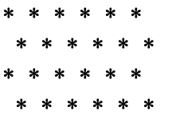

Вывести шахматную доску с заданными размерами высоты и ширины, по принципу:
Входные параметры: длина, ширина, символ для отображения.
Выход: строка с представлением шахматной доски
Есть два конверта со сторонами (a,b) и (c,d). Требуется определить, можно ли один конверт вложить в другой. Программа должна обрабатывать ввод чисел с плавающей точкой.
Входные параметры: объекты конверт1 и конверт2
Выход: номер конверта, если вложение возможно, 0 – если вложение невозможно.
Вывести треугольники в порядке убывания их площади.
Входные параметры: массив объектов треугольник
Выход: упорядоченный массив имён треугольников
Проверить является ли число или его часть палиндромом. Например, число 1234437 не является палиндромом, но является палиндромом его часть 3443. Числа меньшие, чем 10 палиндромом не считать.
Входные параметры: число
Выход: извлеченный из числа палиндром либо 0, если извлечение не удалось.
Есть 2 способа подсчёта счастливых билетов:
1. Простой — если на билете напечатано шестизначное число, и сумма первых трёх цифр равна сумме последних трёх, то этот билет считается счастливым.
2. Сложный — если сумма чётных цифр билета равна сумме нечётных цифр билета, то билет считается счастливым.
Определить программно какой вариант подсчёта счастливых билетов даст их большее количество на заданном интервале.
Входные параметры: объект context с полями min и max
Выход: объект с информацией о победившем методе и количестве счастливых билетов для каждого способа подсчёта.
Вывести через запятую ряд длиной n, состоящий из натуральных чисел, квадрат которых не меньше заданного m.
Входные параметры: длина и значение минимального квадрата(ЗМК)
Выход: строка с рядом чисел
Вывести все числа Фибоначчи, которые удовлетворяют переданному в функцию ограничению: находятся в указанном диапазоне, либо имеют указанную длину.
Входные параметры: объект context с полями min и max, либо с полем length
Выход: массив чисел